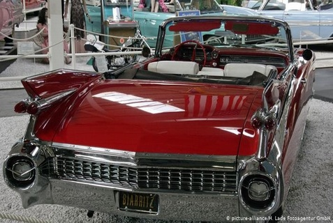

Cadillac Eldorado (1959)
Pink Cadillac fue un éxito de Bruce Springsteen en la década del 80. El protagonista de la canción solo sale con una chica porque posee un Cadillac. Este automóvil de culto era muy apreciado ya en los año 50, pero con el tiempo fue perdiendo adeptos. Los nuevos modelos no tuvieron tanto éxito entre el público en general, pero Cadillac Eldorado fue y sigue siendo un ícono.